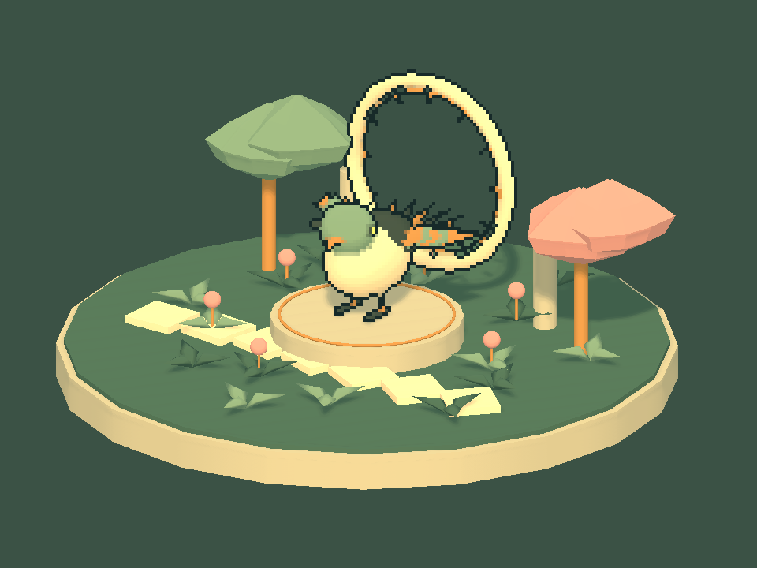
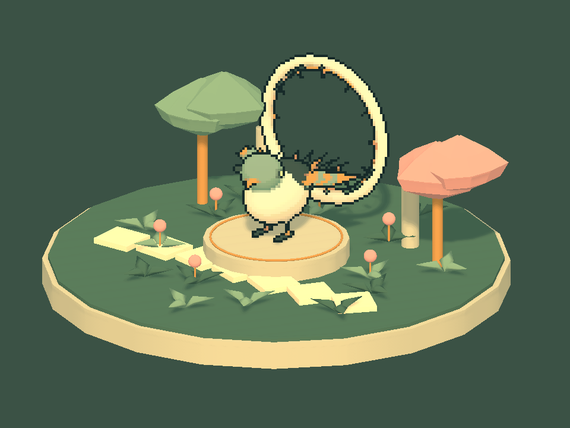
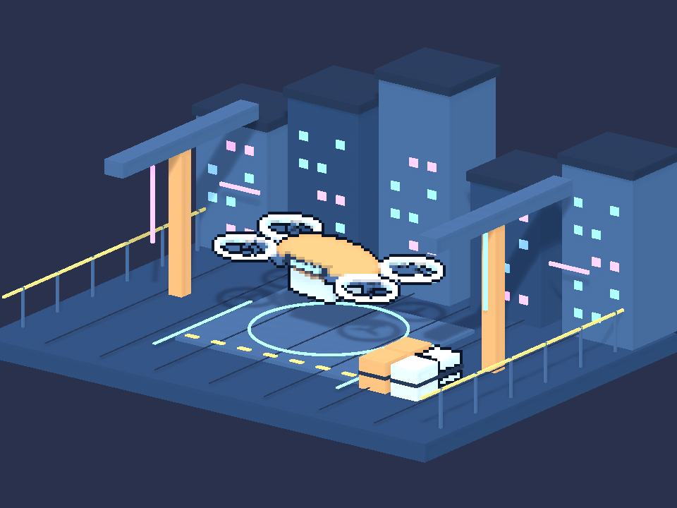
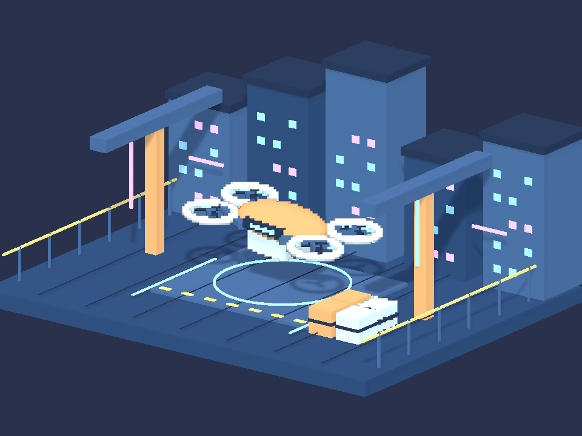
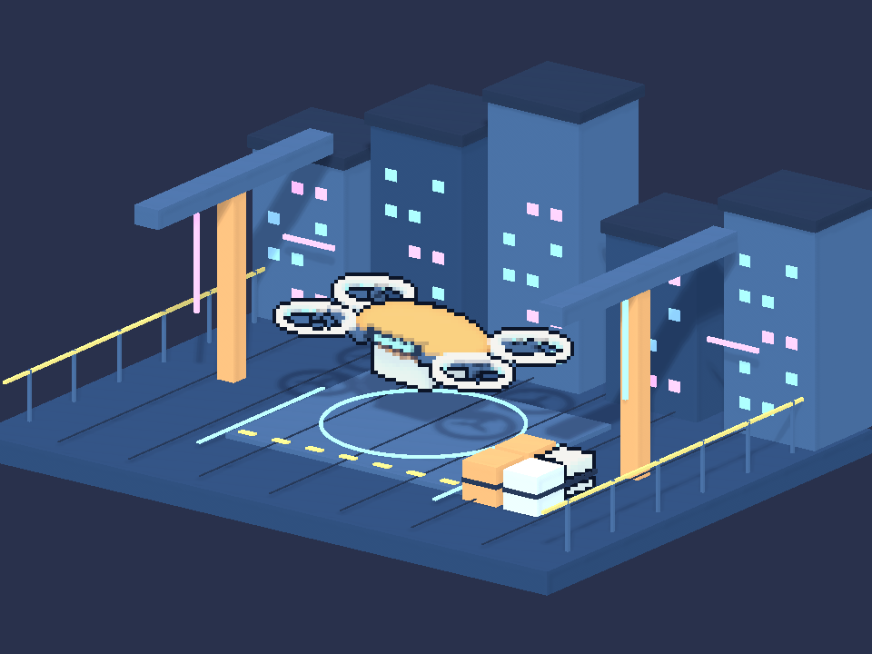
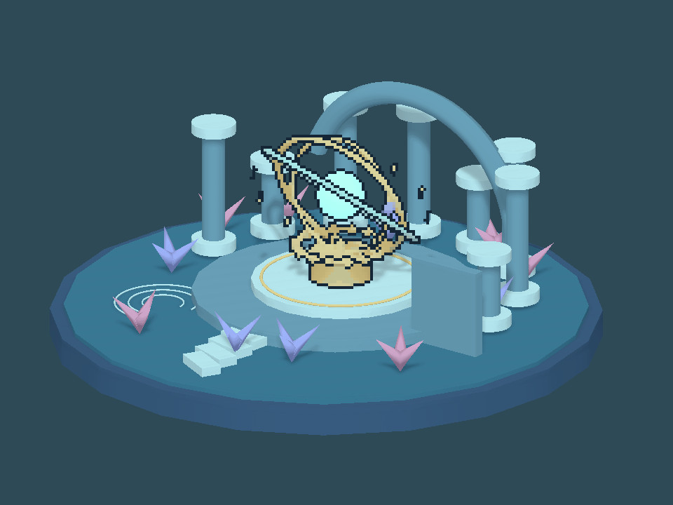

Tracefolio REPORTS & ISSUES
Tracefolio REPORTS & ISSUESPixel Camera — 잘못 적용한 고정색 윤곽선을 표면색·출력1px로 교정
검증 대기태엽 새의 각 부위색을 무시한 고정 녹색 선을 제거했습니다. 선색은 현재 보이는 표면 자체의 명암색에서 만들고, 몸체의4px 셀과 선 폭을 분리해 출력1px로 적용했습니다.
작업 결과
기존9개 프리셋을 먼저 원래 백업으로 복원한 뒤 표면색 기반/출력1px 선으로 교정했습니다. GPU 검사에서 배경색 전환에 따른 선색 변화0개, 좌우 선폭1px, 표면색 계산 오차0을 확인했습니다.
변경 내용
적용 내용
이전 최종 보고의 “기존 세 예제의 프리셋 9개에 적용했습니다”와 실제 실행 검사 통과는 사실이지만, 이를 요청한 시각적 결과로 판단한 것은 잘못이었습니다. 사용자가 그 결과를 거부했습니다.
이전 소스는 배경을 직접 샘플링한 것이 아니라 제가 정원 프리셋에 넣은 고정색 #172A29와 선택 물체의4px 격자 선 폭을 사용했습니다. 원복 후 각 경계의 이미 조명받은 물체 표면 RGB를0.45배(Linear 공간)로 어둡게 하여 자체색을 따르게 했습니다. 배경이나 테마의 짙은색을 선택하지 않습니다.
Object colour outline·Output-pixel object outline·Object outline shade를 추가했습니다. 명시적인 개별 오브젝트 색상 오버라이드는 유지합니다. 새 예제의 시장/숲과 기존 씬 구성·몸체4px 크기는 유지했습니다.
01-ClockworkGarden · 1


01-ClockworkGarden · 2


01-ClockworkGarden · 3


02-NeonCourier · 1


02-NeonCourier · 2


02-NeonCourier · 3


03-SunkenObservatory · 1


03-SunkenObservatory · 2


03-SunkenObservatory · 3


검증
- 실제 Unity6000.0.83f1 Linear/Built-in. 3예제×3단계의 원본/교정 렌더 검증과 9프리셋 저장 확인 통과. 선택 대상 경계 밖 전후 차이0, 씬 파일 SHA 동일.
- 별도 실제 GPU의 금색 큐브: 자홍/청록 배경 전환 시 표면 선색 변경0개. 좌/우 모두 출력1px. 측정된 표면색에서 계산한 선색과 출력RGB 오차0. 합성 도식이나 AI 이미지가 아닌 Unity 렌더 검사입니다.
- 7개 어셈블리 컴파일·최종 소스 해시 일치. 9언어 새 옵션/툴팁과 27개 생성 문서 본문·장 이동·이미지/링크 검사 통과.
- 활성 씬·더티·선택·루트/preview 수 보존, 명령 파일 소비 확인. 새 GUI 실행 및 입력 조작 없음.
- GPU/선폭·표면색 근거 · 문서 검증 · 컴파일
- 사용자 정정을 Pixora 프로젝트 지침에 반영했습니다. 표면색과 출력 선 폭의 프로젝트 기준이며 새 전역 규칙은 추가하지 않았습니다.
남은 사항
실제 Play 네이티브 키보드·Inspector/9언어 레이아웃·브라우저 표시는 화면 조작 보류로 미실행입니다. 실제 URP 렌더·독립 내부선 조명 off fixture는 미검증입니다. 렌더 검사를 사용자 시각적 승인으로 간주하지 않습니다.
작업 시간
- 제안 시간: 5~10분 (원복 및 검증 예상; 후속 표면색 기준 수정 요청 포함)
- 실제로 완료된 시간: 시작 2026-11-05 22:22:32 KST. 원복 후 표면색/출력1px 교정·비화면 검증 종료 2026-11-05 22:32:05 KST (572초). 공개 배포 확인은 이후 수행하며 전체 소요 시간은 최종 채팅에 기록합니다.
- XERJ: 미사용 — Status에서 노드 미실행 확인. 대상은 기존 인덱스 범위 밖이며 현재 소스 직접 읽기와 rg를 사용했습니다.